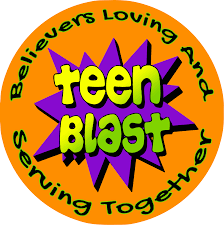

Impact Stories & Partners
This page is under development. In the future, you’ll find stories, photos, and details about the organizations and lives impacted by the Gorski Family Office and Gorski Foundation.
-

- 
-

-

Global Reach
Through partnerships and direct grants, the Gorski Foundation has touched lives in North and South America, Europe, and beyond—empowering local leaders and uplifting the vulnerable.